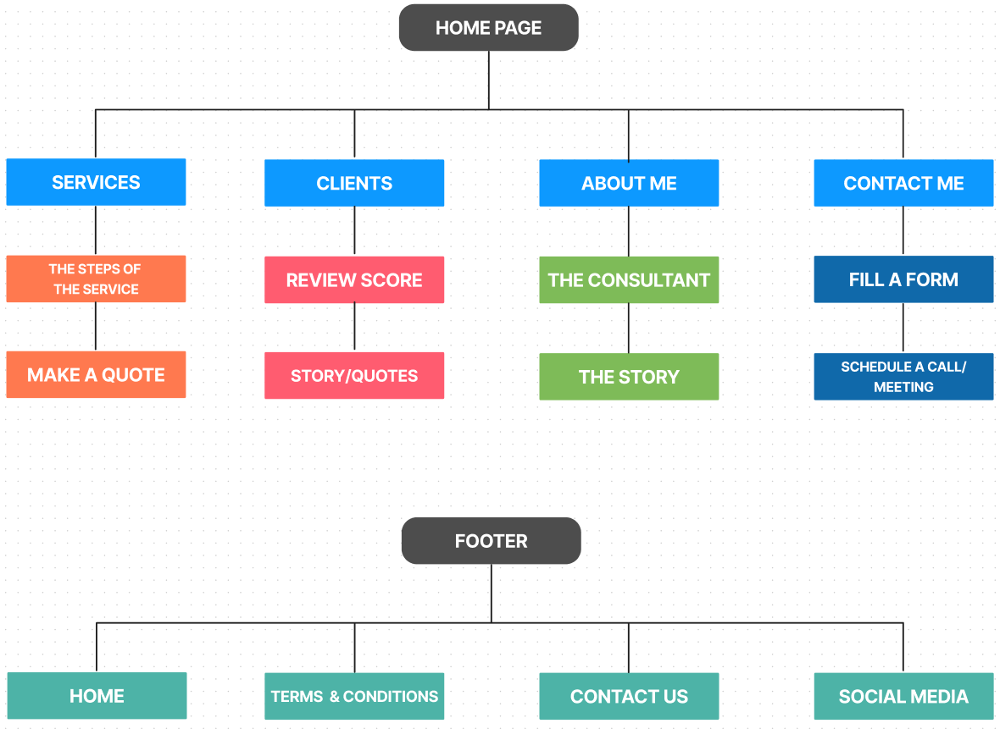

Laura Paschoal | UX/UI DESIGNER
This was a challenge for the UX bootcamp. We needed to choose a client and design a website for their business.
We followed the Design Thinking process through the entire project.
Angel Bascuñana is our client. He is the founder and consultant at Esencial, an organizational transformation agency.
We did a thorough design process, focusing on gathering information about the stakeholder and customers to deliver a good and functional website, and in this case study, I'll explain what we did step by step.
The first thing we did was an interview with Angel to understand better his business and to offer him one possible digital solution for his service. Those are the highlights of what he said to us:
Medium, small companies, with the whole team, teaching culture. In the big companies with the team leaders, directors, and managers.
Coherence between what you say and what you do. Honesty and integrity, development, continuous learning, responsibility.
There are a lot of companies of consulting and coaching. But I believe everyone has some unique value proposition, I don't want to compete, I would like to offer something different to my target.
I offer methodologies purpose on how to operate in the market and how to organize tasks through agile methodology, lean start-up, there are a lot of useful techniques.
Right now I'm making posts on Linkedin, connecting with people through it, and offering my services. I don't have any sales strategy yet.
At Esencial they do strategic-cultural transformation with teams, from within. They help companies to generate more value for their customers by bringing businesses closer to people and building a human and effective culture.
After we did the interview with Angel, we made a research about his competitors. We put our research in the feature and brand comparison charts, and in a market positioning map.
We learned that having a professional website for consultant freelancers is a must-have for showcasing their services. It allows a new audience to find them on the internet, the consultant can share their previous clients' testimonials and with that, get qualified leads. We have also learned that most of the time people hire freelancer consultants via LinkedIn, freelance specialized websites, or mouth-to-mouth.
Alexandra Garcia is the user that we created to be Angel's future client based on the affinity diagram that we did. We will use her as our guide through our process of developing the website.
She is the CEO of a medium size company specialized in handmade jewelry. She wants her sales to grow and in the future, expand her business to a second store, but Alexandra doesn't know how to find a good and trustworthy consultant online, because there are a lot of consultants and not so many with the right information that she seeks to have the trust she needs for her business.
With both the persona and the stakeholder in mind, we started to find our problem statement for the two of them.
The problem statement for the stakeholder: Angel's website was designed to achieve selling consulting services to small and medium companies. We have observed that the lack of information provided about the service is not meeting the user's expectation for a trustworthy experience which is causing a negative impact on the sales/booking to his business.
The problem statement for the users: Small (<15) and medium (<50) business owner need to find a way to book trustful transparent business from companies that provides an overview of their service because they need to see what they pay for and they need to rely on the person to make their company grow.
After we established the problem statements we reached the phase of the HMW and the brainstorming of the HMW’s that we gathered. We did a voting process to decide what were the most important features that the website needed to have to achieve both Angel’s and the user’s goals.
We created the sitemap showing the relationship between the pages we thought was necessary according to the features we found in our How Might We process.

We made a first user flow based on the sitemap we created. After that, we did concept testing with 5 people to test the path the user would have to take to reach the goal of our user flow.
After we received feedback based on the concept testing, we found out that this kind of service should be done in a very personalized way, for this reason, we deleted the “packages section” and left just the contact section to be contacted by the consultant to create a personal individualized business plan.
In this phase, was the time to create the attributes for the brand, in our case, Esencial and also a moodboard.
These were the brand attributes that we found about Esencial:
As a consultancy, trust is a key factor in Esencial — which is built by the aforementioned attributes — it's what really converts a qualified lead into a client.
After a voting process, we came to a conclusion about the colors used on the hi-fi wireframe.
The colors were chosen to convey confidence, transparency, innovation, dynamism, and sobriety. The main color is a variety of turquoise, which gives the structure of the website and coherence to the user flow. The secondary color is a kind of orange which complements the turquoise. The accent colors were used to highlight some spots on the website.
We also did a voting process for the typography and in the end, the chosen one was Roboto typeface.
We chose Roboto to give a clear and clean aspect to the text on the website. But also because this typeface gives a sober facet and expresses what Esencial is.
For this part, we did an interview with 4 people about our usability test, and with the feedback that we received from them, we changed a few things in our final hi-fi wireframe.